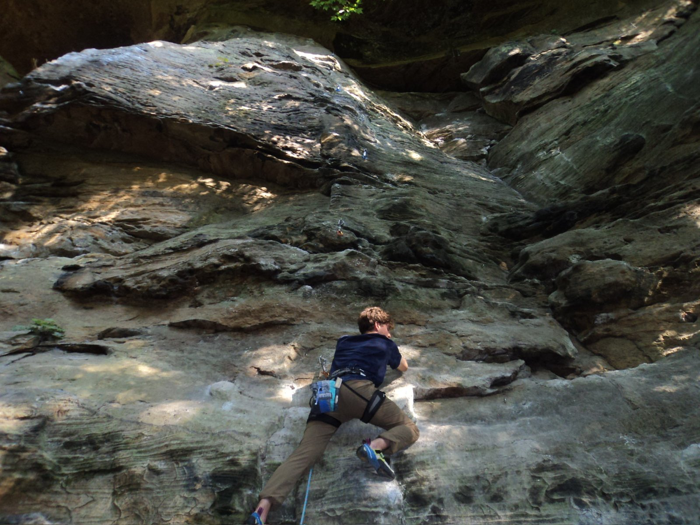

Misc
Climbing at Red River Gorge
Just got home from an awesome rock climbing trip to Red River Gorge. Here’s an action shot of me tackling The Bee’s Business (5.7+).

Misc
Just got home from an awesome rock climbing trip to Red River Gorge. Here’s an action shot of me tackling The Bee’s Business (5.7+).
